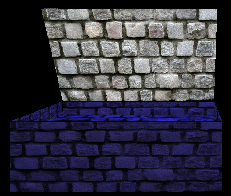

Dancing Man - Part 2
Developed By :
Shivam H Prasad - 110050041
NIshit Bhandari - 110050026
Link to Part 1 Report
Link to Part 3 Report
Introduction :
Dancing Man is a modelling project. This includes modelling a dancing human figure and some other non-living objects like room, furniture, lights etc and then animating them using openGL. This is the second part of the project in which we have modelled camera movement and created room scene which involves a room inside of which are 2 chairs, 1 almirah, 1 table and 2 lights (one of them is a lamp kept on table).
Implementation :
-
Part 1 finished with modelling of human figure and its movements in 3D space.
-
In Part 2 a room scene is created and human figure is placed inside the music box created in Part 1.
-
Bezier curves are used for camera animation.
-
Control points for defining the Bezier curve are taken as user input. These control points can lie anywhere is 3D space.
-
Using user defined control points Bezier curve is generated and camera can be moved on this curve.
-
GL_LIGHTING is used to lighten up the room.
-
Two lights have been enabled in the room. One is attached to the lamp and other is at one of the top corners.
-
Movements of all the movable objects in the room as well as lights on/off toggle are provided as keyboard input functions.
Class Structure :
Following new classes have been implemented
-
almirah class
- Used to create the almirah made up of rectangles.
- Each face of the almirah is a rectangle.
- GLuint object to contain texture to be applied on the almirah.
- Display List containing building blocks of the almirah i.e. rectangles.
- Method to open/close the door of almirah.
-
room class
- Used to create the room made up of rectangles.
- Each face of the room is a rectangle except the front wall which includes (wall portions and door).
- GLuint object to contain texture to be applied on the walls and door.
- Display List containing building blocks of the room i.e. rectangles.
- Method to open/close the door of room.
-
table class
- Used to create the table made up of cuboidal top and cylindrical legs.
- GLuint object to contain texture to be applied on the top and legs of the table.
- Display List containing building blocks of the table i.e. cuboid and cylinders.
-
chair class
- Used to create the chair made up of cuboidal seat, cylindrical legs and rectangular back.
- GLuint object to contain texture to be applied on the top, seat and back of the chair.
- Display List containing building blocks of the chair i.e. cuboid, rectangle and cylinders.
-
stool class
- Used to create the stool made up of circular top and cylindrical legs.
- GLuint object to contain texture to be applied on the top and legs of the stool.
- Display List containing building blocks of the stool i.e. circular disk and cylinders.
Interface Settings :
- Press c to initialize the scene or to reset the scene.

- Press o to open the box and O to close it.

- Press q to open the room door and Q to close it.

- Press v to open the almirah and V to close it.
- Press x, X, y, Y, z, Z to make body movements in various directions.
- Press n to enable movement about neck.

- Press 4 or 6 to toggle lights in the scene on/off.
- Press u to plot bezier curve, U to erase bezier curve and C to start camera animation.

- Press s or S to enable movement about left or right shoulder.
- Press l or L to enable movement about left or right elbow.

- Press w or W to enable movement about left or right wrist.

- Press t to enable upper torso movement.

- Press T to enable lower torso movement.

- Press h or H to enable movement about left or right hip.

- Press k or K to enable movement about left or right knee.

- Press a or A to enable movement about left or right ankle.
- Press ESC to quit the program.